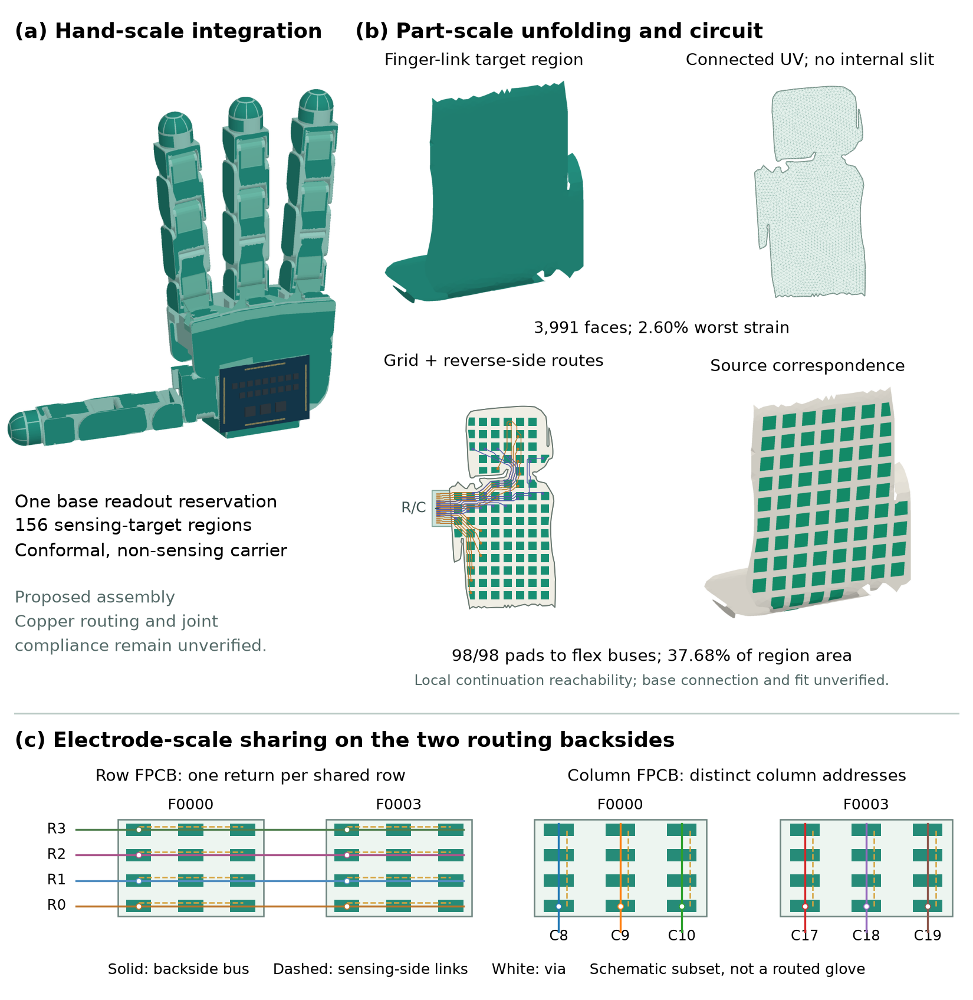
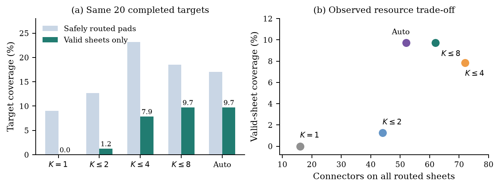
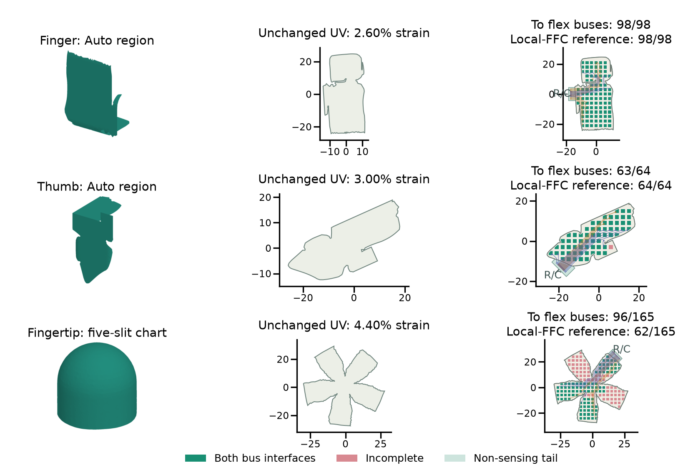
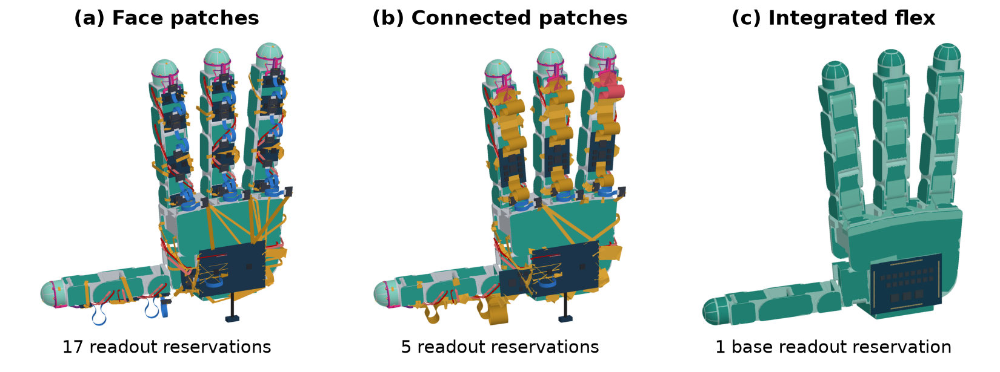

A robot's shape is only the beginning
Suppose we have the CAD model of a robot hand and want to cover its contact surfaces with tactile sensors. The natural starting point is geometric: identify the exposed surfaces, flatten them, draw an electrode grid, and wrap the resulting flexible circuit back onto the hand.
Each of those steps is possible on its own. The difficulty is making their outputs compatible. A cut that helps a sheet fit a curved finger can disconnect an electrode row. Dividing a surface into smaller patches can reduce distortion but leave too little room for connectors. A layout can look densely covered in a rendering while most of its electrodes cannot reach the readout electronics.
Unitactile studies this coupled geometry–connectivity problem: how should we cut, flatten, and wire a robot's surface so that the resulting tactile skin is electrically useful?
The project combines geometric processing, circuit evaluation, deterministic search, and exploratory language-model agents. Its most useful finding is a design tension: smaller sheets often fit better, but their electrical interfaces become harder to accommodate. That observation led us from independently connected patches toward a glove-like architecture with traces on the back of the flex and a shared base readout.
Two flex boards, one sensing grid
Our sensing architecture uses a sandwich of two flexible printed circuit boards (FPCBs). One carries horizontal electrode connections; the other carries vertical connections. Each board uses its reverse copper layer to route from the electrodes through vias toward its interface. A sensing location is useful only when both its row and its column are reachable.
This distinction matters when looking at a circuit drawing. Row and column traces can cross in an overlay because they occupy separate boards. Distinct electrical nets on the same copper layer must remain isolated. The baseline also reserves actual flexible-flat-cable (FFC) connector footprints, including stiffeners, rather than treating a connector as a point that fits anywhere.
We fixed the baseline hardware before evaluating layouts:
| Constraint | Baseline setting |
|---|---|
| Electrode grid | 3 mm pitch; 2 × 2 mm square pads |
| Readout capacity | 32 channels per axis |
| Usable planar extent | 95 × 95 mm |
| Connector stiffener | 23.7 × 6.8 mm, contained within the sheet |
| Copper rules | 0.20 mm traces; 0.15 mm clearance |
| Geometric threshold | At most 5% local principal-stretch error |
The 5% threshold is a design assumption, not a measured tolerance of a fabricated FPCB stack. Likewise, fully connecting a grid does not mean covering every square millimeter: the pads themselves occupy only 4/9 of a full interior grid cell before cuts, margins, and routing constraints enter the picture.
From the assembled hand to a circuit
The pipeline begins with part meshes positioned using their URDF assembly transforms. We classify which surfaces are externally exposed, exclude parts with less than 5% exposed area, densify eligible meshes, and remove small components and thin features. Postprocessing produces contiguous, hole-free target regions. These targets are frozen before optimization so that a search cannot quietly remove difficult areas from its coverage denominator.
The design process then has four stages:
- Choose the sheet boundaries. Keep one connected surface with seams, or partition it into several connected regions.
- Flatten the surface. Produce a planar chart while preserving the correspondence to the assigned source triangles and measuring local stretch and compression.
- Place the grid and its interfaces. Search over grid position and orientation, then connector poses or flex continuations.
- Reconstruct and evaluate the circuit. Generate copper under fixed rules; check clearance, pin assignments, and row/column reachability; credit only the area under reachable pads.
The evaluator reconstructs the circuit rather than accepting a proposed score or connectivity claim. This makes the same evaluation usable for numerical algorithms and agent-written programs.

A score that does not reward squashing the surface
An early evaluation failure was surprisingly instructive. If coverage simply counts the source surface underneath each planar pad, a badly compressed chart can look excellent: one small physical pad maps back to a large area of the robot. The numerical score rewards a sensor that could not fit that surface.
We therefore measure distortion with log-stretch, which treats stretching and reciprocal compression symmetrically and grows without bound as a chart collapses. The geometry factor combines area-weighted distortion with the average over the worst 1% of source area, so a small, severely distorted region cannot disappear in a global mean. Internal seam length and slit tips incur a separate penalty.
For coverage, each triangle–pad intersection receives the smaller of its planar area and corresponding source area, down-weighted by distortion. It contributes only if both axes are reachable on a safely routed board pair. The resulting per-sheet objective is:
The additive one keeps a useful geometry signal even before routing succeeds. Agents receive the individual components as well as the scalar, because a single number does not explain whether the next improvement should target distortion, seams, or connectivity. The full definitions are in the manuscript.
We also keep three different ideas separate: a circuit can be safe without connecting every pad; it can connect every pad while distorting the surface too much; and it can pass both computational checks without having been physically qualified. Partial layouts remain informative results, with their actual reachable area reported.
What happens when we allow more sheets?
The main experiment evaluates a deterministic multi-sheet baseline on 21 prepared Allegro-hand targets. We compare one sheet, caps of two, four, or eight sheets, and an automatic splitting policy. The partitioner builds a graph of neighboring triangles and favors cuts across large changes in surface orientation. It recursively splits regions that fail geometric checks, then searches grid and connector placements for the retained regions.
This is deliberately a geometry-driven baseline: connector failures do not feed back into the partitioner. That makes it useful for seeing what geometric decomposition alone can achieve—and what it misses.
Of 105 target–policy conditions, 104 completed. Automatic segmentation of the palm timed out; its metrics are missing, not zero. The other policies completed all 21 targets.
| Sheet policy | Targets completed | Raw reachable coverage | Coverage on fully passing sheets | Fully passing sheets | Connectors |
|---|---|---|---|---|---|
| One sheet | 21 | 5.8% | 0.0% | 0 | 16 |
| Up to 2 | 21 | 8.2% | 0.8% | 3 | 44 |
| Up to 4 | 21 | 15.0% | 5.1% | 12 | 72 |
| Up to 8 | 21 | 14.0% | 8.3% | 18 | 66 |
| Automatic* | 20 | 17.0% | 9.7% | 16 | 52 |
“Fully passing” means satisfying the implemented geometry, strain, and complete-connectivity criteria. Raw coverage includes reachable pads on safely routed but incomplete or over-strained sheets. All coverage uses original target area. Connector totals include every selected routed sheet, including partial designs. *Automatic excludes the timed-out palm and has a different denominator.
Allowing eight sheets produces 18 fully passing sheets on 12 targets. Those sheets cover 8.3% of the total target area. This is a useful local result, but it is not full coverage of 12 parts. Nor is the policy with the most reachable area necessarily the policy with the most acceptable geometry: four sheets gives higher raw coverage, while eight gives more coverage on fully passing sheets.
For a like-for-like comparison including the automatic policy, we exclude the palm from every policy. On those 20 targets, raw coverage peaks at four sheets (23.2%), while coverage on fully passing sheets reaches 9.7% under both eight-sheet and automatic policies. The palm accounts for about 35% of the full target area, so this denominator change matters.

Splitting shifts the bottleneck. Under the eight-sheet policy, 57 of 95 retained regions have no connector placement found by the sampled search. This is not proof that a connector could never fit; it says that the tested search, outline, and footprint combination failed. Smaller regions can be easier to flatten and harder to instrument at the same time.
Deterministic geometry and AI agents
We also compared fixed-topology flattening, an incremental cut-growth heuristic, Boundary First Flattening (BFF) with four or eight cones, and OptCuts on three development targets: a finger link, a fingertip, and a thumb link. These methods optimize different geometric objectives. A conformal map or an acceptable OptCuts energy does not automatically satisfy a maximum-strain limit or preserve the wiring.
The agent experiments explored three interfaces:
- Direct: generate a design program from the target and public contract in one attempt.
- Generic feedback: revise the program using numerical evaluation feedback.
- Two specialists: alternate a geometry role for cuts and unfolding with a layout role for the grid and connectors.
Agents operate with public inputs and contracts while the evaluator implementation remains private. Saved artifacts were re-evaluated offline under the same scoring and hardware rules. The table below summarizes the selected scores; agent rows retain agent-chosen placements, while deterministic charts use an 18-pose placement bank.
| Method | Finger score | Fingertip score | Thumb score |
|---|---|---|---|
| Fixed topology | 0.023 | 0.0032 | — |
| Cut growth (fell back to fixed map) | 0.023 | 0.0032 | — |
| BFF, 4 cones | 0.071 | 0.0079 | — |
| BFF, 8 cones | 0.186 | 0.018 | — |
| OptCuts, bound 4.05 | 0.023 | 0.0083 | — |
| Direct agent | —† | 0.0060 | 0.0074 |
| Generic feedback | 0.160 | 0.114 | 0.00013† |
| Two specialists | 0.233 | 0.117 | — |
Higher is better under the per-sheet objective, but a score does not certify complete connectivity or acceptable strain. A dash means no safely evaluated candidate, not a zero score. † Interrupted condition. These are single observations with unequal search budgets and different placement strategies, not a controlled ranking of agent architectures.
The agent fingertip charts are an interesting partial success. Two meet the geometric threshold with five-slit unfoldings, yet only 62/165 and 73/167 retained pads reach both local interfaces. Conversely, some deterministic layouts connect every retained pad while distorting the surface far too much. Across the 520 candidates in this common-evaluator analysis, none meets all the computational criteria at once.
The best saved agent designs score above the best deterministic settings on the finger and fingertip. That observation motivates further work; it does not establish that specialization is better than a generalist, or that an agent reliably solves the problem. Applying the same placement bank to saved agent charts improves one finger result but misses feasible poses on several other charts. The chart and its electrical layout have to be considered together.
Put the returns on the back of the flex
The local-connector bottleneck suggests changing the architecture. Instead of fitting a connector body onto every sensing region, can traces continue through non-sensing flex to a shared readout elsewhere?
We tested this locally on three saved designs. Their charts, grids, and sensing pads stay fixed. We remove the local connector bodies and stiffeners, add short non-sensing tails, and search tail positions, widths, routing order, and independent row/column exits. The copper width, clearance, and via rules remain in force. Counts now measure reachability to unpopulated continuation interfaces, not to a verified hand-base circuit.
| Example | Local FFC reference | Backside flex continuations | Extra substrate per FPCB |
|---|---|---|---|
| Finger region | 98/98 pads | 98/98 pads | 39.15 mm² |
| Thumb region | 64/64 pads | 63/64 pads | 44.85 mm² |
| Fingertip | 62/165 pads | 96/165 pads | 44.65 mm² |
The fingertip gains 34 jointly reachable pads, without changing its five-slit chart. The finger retains full grid connectivity. The thumb loses one pad, a reminder that removing a connector footprint does not automatically make every route easier. The added tails earn no sensing-area credit.

From connected patches to a glove
At the whole-hand scale, the idea is to make the interconnect part of the skin. Adjacent patches can tap a continuous backside return for a shared row. Distinct column addresses on the companion board preserve unique row–column pairs. Instead of many exposed return bundles and a board on each part, the paired flex layers could carry signals toward a base readout.
We visualized three stages: distributed face patches, connected patches with one readout per finger plus a palm readout, and an integrated flex carrier with one base readout. Their board reservations decrease from 17 to five to one. The light-green connecting regions are carrier material and joint webs, not extra sensing area.

Centralization also changes the engineering problem. The concept uses 127 row and 140 column channels, exceeding the baseline's 32 per axis, and requires longer analog paths. A neat rendering does not show that a non-stretching flex can follow a moving joint. The local routes evaluated above have not been connected through the entire carrier to the base board.
The promising next optimization is therefore broader than UV unwrapping: choose sensing patches, non-sensing bridges, shared returns, and readout locations jointly. It should minimize added substrate and connector overhead while retaining reachable sensing area and respecting the mechanical demands of articulation.
What I take from this project
Robot-to-skin design is a useful example of why physical design needs more than a plausible output image. Geometry, connectivity, and packaging impose different constraints, and optimizing one can make another worse. The evaluator made those conflicts visible: compressed charts that inflated coverage, low-distortion cuts that severed buses, and small patches that could not accommodate the sampled connectors.
There are encouraging local results, including completely connected finger regions and improved fingertip reachability through backside flex continuations. There is also a clear remaining gap between those results and an installed tactile glove. Closing it will require global routing, joint-aware mechanical design, fabrication, and electrical and tactile characterization.
For agent-based design, the lesson is equally concrete. A useful research environment must expose the right diagnostics and preserve the distinction between a partial improvement and a solved device. Unitactile provides a working setting for that investigation, with real geometric inputs and explicit circuit constraints.
Manuscript and related work
This post adapts the October 28, 2026 manuscript, Unitactile: Geometry–Connectivity Trade-offs in Automated Tactile Skin Design. The PDF includes the objective definitions, full per-target tables, evaluation details, and experiment limitations.
Relevant starting points include:
- Olberding et al., A Cuttable Multi-Touch Sensor, UIST 2013.
- Murphy et al., Fits like a Flex-Glove: Automatic Design of Personalized FPCB-Based Tactile Sensing Gloves, CHI Extended Abstracts 2025.
- Sawhney and Crane, Boundary First Flattening, ACM TOG 2018.
- Li et al., OptCuts: Joint Optimization of Surface Cuts and Parameterization, ACM TOG 2018.
- Rabinovich et al., Scalable Locally Injective Mappings, ACM TOG 2017.
The main study concerns one hand at one fixed pose; related part geometries are not independent robot families. No fabrication, force calibration, durability study, or robot manipulation evaluation was performed.